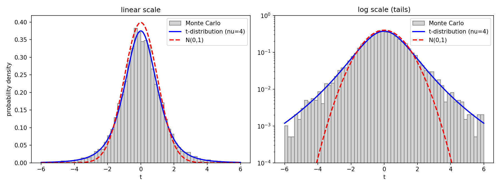
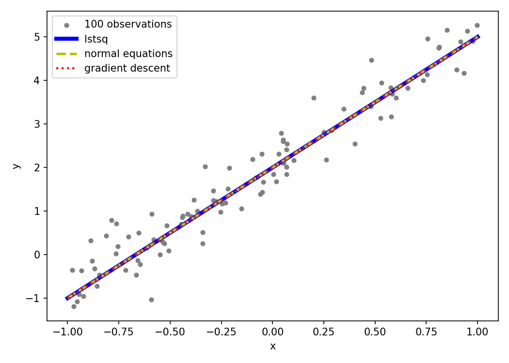

Objective Analysis Week 04 Homework#
Question 1. Frequentist vs. Bayesian Perspectives#
To evaluate the localized cooling effect of a climate engineering intervention (e.g., stratospheric aerosol injection), scientists compared the mean temperatures of an experimental region and a control region. The latest observational analysis reports an apparent cooling effect of
Due to instrumental noise, uneven sampling networks, and natural climate variability, the standard error of this estimated difference is \(\sigma_d = 0.4^{\circ}\mathrm{C}\). Both frequentist and Bayesian statisticians accept these numbers, but they profoundly disagree on what may be said next.
(a) The Frequentist View
Calculate the probability that measurement noise and natural variability alone would produce an apparent cooling gap of \(0.6^{\circ}\mathrm{C}\) or larger if the intervention were truly ineffective (i.e., true cooling \(d_{\text{true}} = 0\)). You may express your answer using the standard normal cumulative distribution function \(\Phi(z)\).
Furthermore, explain why a frequentist strictly declines to answer the question, 「What is the probability that the intervention is truly effective?」 Base your reasoning on the frequentist definition of what kind of quantity is allowed to carry a probability.
(b) The Bayesian View
Assume a flat prior, meaning there is no reason beforehand to favor either a cooling or warming effect. Write down the posterior distribution of the true cooling effect \(d\) given the observed data.
Then, calculate the posterior probability that the intervention is truly effective (true \(d > 0\)). How do the conditional forms of the probabilities differ between the two camps? Express this distinction mathematically using the form \(\Pr(A \mid B)\).
(c) The Common Pitfall
Suppose a science news article reports: 「According to statistical analysis, there is only a 6.7% probability that the climate intervention has no effect.」 (Note: \(\Phi(-1.5) \approx 0.067\)). Explain the fundamental statistical error in this statement.
Using your understanding from parts (a) and (b), rewrite the conclusion into two statistically rigorous sentences: one strictly following the frequentist logic, and one following the Bayesian logic.
(d) Informative Prior
Suppose another research team warns that, based on past laboratory experiments and small-scale climate models, this specific technology often triggers a weak unexpected 「warming」 rather than cooling. Consequently, the prior distribution is no longer flat, but is instead a Gaussian distribution centered on a negative value.
Qualitatively explain how this new prior information would alter the Bayesian posterior probability calculated in (b). Finally, would the frequentist calculation (the p-value) in (a) change due to this new prior information? Briefly explain why or why not.
中文翻譯#
問題 1：頻率學派 vs. 貝氏學派的觀點
為了評估某項氣候工程干預（例如平流層氣膠注入）的局地降溫效果，科學家比較了實驗區與對照區的平均氣溫。最新的觀測分析顯示，表觀降溫效果為
\[d = 0.6^{\circ}\mathrm{C}\]由於儀器雜訊、不均勻的取樣網路以及自然氣候變異，此估計差值的標準誤為 \(\sigma_d = 0.4^{\circ}\mathrm{C}\)。頻率學派與貝氏學派的統計學家都接受這些數字，但對於接下來可以說什麼，兩派意見嚴重分歧。
(a) 頻率學派的觀點
若該干預實際上完全無效（即真實降溫 \(d_{\text{true}} = 0\)），計算僅靠量測雜訊與自然變異就產生 \(0.6^{\circ}\mathrm{C}\) 或更大表觀降溫差的機率。答案可用標準常態累積分布函數 \(\Phi(z)\) 表示。
此外，解釋為什麼頻率學派會嚴格拒絕回答「此干預真正有效的機率是多少？」這個問題。請依據頻率學派對「什麼樣的量才可以被賦予機率」的定義來說明理由。
(b) 貝氏學派的觀點
假設採用平坦先驗（flat prior），也就是事前沒有任何理由偏好降溫或增溫效果。寫出在給定觀測資料下，真實降溫效果 \(d\) 的後驗分布。
接著，計算此干預真正有效（真實 \(d > 0\)）的後驗機率。兩個陣營的機率在條件形式上有何不同？請用 \(\Pr(A \mid B)\) 的形式以數學方式表達此差異。
(c) 常見的陷阱
假設某篇科學新聞報導：「根據統計分析，該氣候干預沒有效果的機率只有 6.7%。」（註：\(\Phi(-1.5) \approx 0.067\)）。解釋此敘述中根本性的統計錯誤。
根據你在 (a) 與 (b) 的理解，將此結論改寫為兩個統計上嚴謹的句子：一句嚴格遵循頻率學派的邏輯，另一句遵循貝氏學派的邏輯。
(d) 資訊性先驗（Informative Prior）
假設另一個研究團隊提出警告：根據過去的實驗室實驗與小尺度氣候模式，這項技術經常會引發微弱且出乎意料的「增溫」而非降溫。因此，先驗分布不再是平坦的，而是一個中心位於負值的高斯分布。
定性說明此新的先驗資訊會如何改變 (b) 中計算出的貝氏後驗機率。最後，(a) 中的頻率學派計算（p 值）會因為這項新的先驗資訊而改變嗎？簡要說明原因。
Answer 1.#
符號與基本設定
\(d\)：真實降溫效果（固定但未知的數）
\(\hat d\)：觀測到的估計值，\(\hat d = 0.6^\circ\mathrm{C}\)
\(\sigma_d = 0.4^\circ\mathrm{C}\)：\(\hat d\) 的標準誤
量測模型：在真實效果為 \(d\) 的條件下，觀測值 \(\hat d\) 服從平均為 \(d\)、標準差為 \(\sigma_d\) 的常態分布
標準常態分布 \(Z \sim \mathcal N(0,1)\) 的累積分布函數（CDF）：
(a)#
虛無假設 \(H_0\)：干預無效，\(d = 0\)。在 \(H_0\) 下
p 值（標準化後查 \(\Phi\)）：
意義：若干預真的無效，單靠量測雜訊與自然變異，在大量重複的實驗中約有 \(6.7\%\) 的機會觀測到 \(\ge 0.6^\circ\mathrm{C}\) 的表觀降溫。
為什麼頻率學派拒絕回答「干預真正有效的機率」：
頻率學派中，機率的定義是可重複隨機實驗的 長期頻率。
每次重做實驗都會改變的隨機量是 \(\hat{d}\)；而真實效果 \(d\) 是 未知的定值，不會因重做實驗而改變。
因此「\(d > 0\)」這個命題要嘛為真、要嘛為假，它的「機率」只能是 \(0\) 或 \(1\)，沒有長期頻率可言，無法給出介於兩者之間的數值。
p 值描述的是 \(\Pr(\text{資料} \mid \text{假設})\)，而不是 \(\Pr(\text{假設} \mid \text{資料})\)。
(b)#
連續版貝氏定理（\(p(\hat d)\) 與 \(d\) 無關，視為正規化常數）：
先驗（平坦先驗）：\(p(d) = \text{常數}\)，對所有 \(d \in (-\infty, \infty)\) 都一樣
概似函數：
後驗（利用 \((0.6 - d)^2 = (d - 0.6)^2\)，改看成 \(d\) 的函數）：
與 hw3 Q2 對照：平坦先驗相當於背景誤差 \(\sigma_b^2 \to \infty\)（背景完全沒有資訊），此時
也就是後驗中心完全由觀測值決定，後驗的不確定度就等於觀測誤差。
干預真正有效（\(d > 0\)）的後驗機率：
兩派條件機率形式的差異：
頻率學派 (a) |
貝氏學派 (b) |
|
|---|---|---|
機率形式 |
\(\Pr(\hat d \ge 0.6 \mid d = 0)\) |
\(\Pr(d>0 \mid \hat d = 0.6)\) |
條件（ |
假設（\(d = 0\)） |
已知 \(\hat d = 0.6\) |
問的對象（ |
資料 |
假設（關於真實效果 \(d\)） |
數值 |
\(\approx 0.067\) |
\(\approx 0.933\) |
觀察：\(0.067 + 0.933 = 1\) 。這只在「平坦先驗 + 對稱的常態分布」下才剛好成立，不代表 p 值等於「干預無效的機率」（這正是 (c) 要討論的陷阱）。
(c)#
新聞敘述的根本錯誤
新聞說「干預沒有效果的機率只有 6.7%」，這是一個關於假設的機率，形式為
但 \(0.067\) 其實是 (a) 算出的 p 值，形式為
新聞把
|兩邊的「資料」與「假設」對調了，這種錯誤稱為 條件機率倒置謬誤（又稱 transposed conditional / prosecutor’s fallacy）。一般而言 \(\Pr(A \mid B) \ne \Pr(B \mid A)\)，就像 hw3 Q3 中 \(P(W \mid H) = 0.9\) 但 \(P(H \mid W) = \frac{1}{3}\)。從頻率學派的角度：由 (a)，\(d\) 是固定的未知常數，「干預無效」這個命題根本 不能 被賦予機率，p 值不可能是「假設成立的機率」。
從貝氏學派的角度：後驗 \(d \mid \hat d \sim \mathcal N(0.6,\ 0.4^2)\) 是連續分布，「完全無效」（\(d = 0\) 這一個點）的後驗機率為 0。貝氏能說的最接近的是 \(\Pr(d \le 0 \mid \hat d = 0.6) \approx 0.067\)，它與 p 值數值相同，只是因為 平坦先驗 ＋ 對稱的常態分布 的巧合，換一個先驗就不再相等（見 (d)）。
改寫成兩個嚴謹的句子
頻率學派：「若該干預實際上完全無效（\(d = 0\)），則僅由量測雜訊與自然變異，就產生 \(\ge\) 0.6 \(^\circ\mathrm{C}\) 表觀降溫的機率約為 6.7 %（\(p \approx 0.067\)）；在 5% 顯著水準下，無法 拒絕『干預無效』的虛無假設。」
貝氏學派：「在平坦先驗下，根據觀測到的 \(0.6^\circ\mathrm{C}\) 降溫，干預確實具有降溫效果（\(d > 0\)）的後驗機率約為 93.3 %，不具降溫效果（\(d \le 0\)）的後驗機率約為 6.7 %。」
(d)#
令新的先驗為 \(d \sim \mathcal N(\mu_0,\ \sigma_0^2)\)，其中 \(\mu_0 < 0\)。
後驗如何改變
先驗與概似函數都是高斯分布，相乘後的後驗仍是高斯分布，結構與 hw3 Q2 完全相同：
hw3 Q2 |
本題 |
|---|---|
背景值 \(x_b\) |
先驗中心 \(\mu_0\) |
背景誤差變異數 \(\sigma_b^2\) |
\(\sigma_0^2\) |
觀測值 \(y\) |
\(\hat{d}\) |
觀測誤差變異數 \(\sigma_o^2\) |
\(\sigma_d^2= 0.4^2\) |
分析值 \(x_a\) |
後驗中心 \(\mu_{\text{post}}\) |
套用 hw3 Q2 的結果：
\(\mu_{\text{post}}\) 是 \(\mu_0\) 與 \(0.6\) 的加權平均，因為 \(\mu_0 < 0\)，所以 \(\mu_{\text{post}}\) < \(0.6\)：後驗中心被先驗往負值（增溫）方向拉。
後驗機率
補充：代入上式可得
所以 \(\Pr(d > 0 \mid \hat d = 0.6)\) 一定比 (b) 的 \(\Phi(1.5) \approx 0.933\) 低，干預有效的後驗機率下降。
兩個極端情況：
先驗很弱（\(\sigma_0 \to \infty\)）：\(K \to 1\)，回到平坦先驗，後驗機率 \(\to\) 0.933。
先驗很強（\(\sigma_0 \to 0\)）：\(K \to 0\)，\(\mu_{\text{post}} \to \mu_0 < 0\) 且 \(\sigma_{\text{post}} \to 0\)，後驗機率 \(\to\) 0。
p 值會不會改變
(a) 的 p 值 不會 改變。
因為 \(p = \Pr(\hat d \ge 0.6 \mid d = 0)\) 只用到「在 \(H_0\) 下資料 \(\hat d\) 的抽樣分布 \(\mathcal N(0,\ 0.4^2)\)」，公式中完全沒有 先驗 \(p(d)\) 這一項；頻率學派把 \(d\) 當作固定常數，不使用先驗資訊。
這也說明 (c) 中「p 值 \(=\) 後驗 \(\Pr(d \le 0 \mid \text{資料})\)」只是平坦先驗下的巧合：先驗改變後，後驗 \(\Pr(d \le 0 \mid \hat d = 0.6) = 1 - \Pr(d > 0 \mid \hat d = 0.6) > 1 - 0.933 = 0.067\)，但 p 值仍是 \(0.067\)。
Question 2. Monte Carlo Derivation of the t-Distribution#
In class, we learned that when the sample size \(N\) is small, the standardized distribution of the sample mean \(\overline{x}\) is no longer a standard normal distribution (z-distribution), but instead follows a t-distribution with heavier tails. The course notes define the t-statistic as:
where
is the uncorrected (biased) sample variance.
This question asks you to construct the distribution of this t-statistic yourself using a Monte Carlo simulation drawn from a standard normal population, and to compare it against the theoretical analytical solution provided in the notes.
(a) Monte Carlo Simulation
Follow these steps to generate the empirical distribution:
Assume a standard normal population \(\mathcal{N}(\mu = 0, \sigma = 1)\).
Perform \(M = 10{,}000\) independent Monte Carlo experiments.
In each experiment, randomly draw a sample of size \(N = 5\).
Calculate the sample mean \(\overline{x}\) and the biased sample variance \(s^2\) for the sample.
Compute the \(t\)-statistic for each experiment.
Plot the \(10{,}000\) resulting \(t\)-values as a probability density histogram.
(b) Analytical Comparison
Overlay the theoretical probability density function (PDF) of the t-distribution for \(\nu = 4\) on your histogram. The theoretical formula given in the notes is:
\[f(t) = f_0(\nu) \left(1 + \frac{t^2}{\nu}\right)^{-\left(\frac{\nu + 1}{2}\right)}\](Note: You may use built-in functions like
scipy.stats.t.pdfin Python ortpdfin MATLAB to plot this theoretical curve, as they inherently compute and include the normalization constant \(f_0(\nu)\).)(c) Discussion
Address the following points based on your results:
Does your Monte Carlo histogram closely match the theoretical t-distribution curve?
On the same figure, overlay the PDF of a standard normal distribution \(\mathcal{N}(0, 1)\). Compare the 「tails」 of the two theoretical curves. Briefly explain why a small sample size \(N\) causes the \(t\)-statistic to exhibit heavier tails, even though the data is drawn from a perfectly normal population. (Hint: Consider the uncertainty introduced by estimating the denominator \(\sqrt{s^2/(N - 1)}\) from a small sample).
中文翻譯#
問題 2：以蒙地卡羅方法推導 t 分布
課堂上我們學到，當樣本數 \(N\) 很小時，樣本平均 \(\overline{x}\) 標準化後的分布不再是標準常態分布（z 分布），而是服從尾部較厚的 t 分布。課程講義將 t 統計量定義為：
\[t = \frac{\overline{x} - \mu}{\sqrt{s^2/(N - 1)}}\]其中
\[s^2 = \frac{1}{N} \sum_{i=1}^{N} (x_i - \overline{x})^2\]為未經修正（有偏）的樣本變異數。
本題要求你從標準常態母體中進行蒙地卡羅模擬，自行建構此 t 統計量的分布，並與講義中提供的理論解析解比較。
(a) 蒙地卡羅模擬
依照以下步驟產生經驗分布：
假設母體為標準常態分布 \(\mathcal{N}(\mu = 0, \sigma = 1)\)。
進行 \(M = 10{,}000\) 次獨立的蒙地卡羅實驗。
每次實驗隨機抽取一組樣本數 \(N = 5\) 的樣本。
計算該樣本的樣本平均 \(\overline{x}\) 與有偏樣本變異數 \(s^2\)。
計算每次實驗的 \(t\) 統計量。
將所得的 \(10{,}000\) 個 \(t\) 值畫成機率密度直方圖。
(b) 與解析解比較
在你的直方圖上疊加自由度 \(\nu = 4\) 的 t 分布理論機率密度函數（PDF）。講義中給出的理論公式為：
\[f(t) = f_0(\nu) \left(1 + \frac{t^2}{\nu}\right)^{-\left(\frac{\nu + 1}{2}\right)}\]（註：你可以使用內建函數，例如 Python 的
scipy.stats.t.pdf或 MATLAB 的tpdf來繪製這條理論曲線，因為它們會自動計算並包含正規化常數 \(f_0(\nu)\)。）(c) 討論
根據你的結果回答以下問題：
你的蒙地卡羅直方圖是否與理論 t 分布曲線高度吻合？
在同一張圖上疊加標準常態分布 \(\mathcal{N}(0, 1)\) 的 PDF。比較兩條理論曲線的「尾部」。簡要說明為什麼即使資料是從完全常態的母體中抽出，小樣本數 \(N\) 仍會使 \(t\) 統計量呈現較厚的尾部。（提示：考慮從小樣本估計分母 \(\sqrt{s^2/(N - 1)}\) 所引入的不確定性。）
Answer 2.#
程式：hw4_q2.py（執行：在 hw4 資料夾輸入 py hw4_q2.py）
基本知識#
1. 蒙地卡羅方法（Monte Carlo）
不去推導分布的解析式，而是「用亂數把實驗做很多次」，再用所有結果畫出的直方圖去近似真正的分布。實驗次數 \(M\) 越大，直方圖越接近真實分布。
2. 有偏與無偏樣本變異數
因此本題分母可以改寫成
3. 為什麼 t 分布的自由度是 \(\nu = N - 1\)
若 \(x_i \sim \mathcal N(\mu, \sigma^2)\) 彼此獨立，則
且兩者彼此獨立。t 分布的定義正是
\(N\) 個資料點算出 \(\overline{x}\) 後，只剩 \(N-1\) 個偏差 \(x_i - \overline{x}\) 是自由的（它們加總必為 0），所以自由度是 \(N - 1 = 4\)。
4. 機率密度直方圖
縱軸不是「次數」，而是「次數 \(/(M \times \text{組距})\)」（density=True），所有長條面積加總為 1，才能和 PDF 曲線疊在同一張圖上比較。
5. NumPy 向量化
一次產生 shape 為 \((M, N)\) 的陣列：每一列是一次實驗的 \(N\) 個樣本。np.mean(x, axis=1) 沿著每一列取平均，得到 \(M\) 個樣本平均；np.var(x, axis=1) 預設除以 \(N\)，正好是有偏變異數 \(s^2\)。
(a)(b) 結果#
亂數種子：SEED = 2026，\(M = 10000\)，\(N = 5\)，\(\nu = 4\)

統計量 |
蒙地卡羅 |
理論 t 分布（\(\nu = 4\)） |
標準常態 |
|---|---|---|---|
\(t\) 的平均 |
\(0.0004\) |
\(0\) |
\(0\) |
\(t\) 的變異數 |
\(2.0121\) |
\(\nu/(\nu - 2) = 2.0000\) |
\(1\) |
\(\Pr(\lvert t \rvert > 2)\) |
\(0.1144\) |
\(0.1161\) |
\(0.0455\) |
\(\Pr(\lvert t \rvert > 3)\) |
\(0.0388\) |
\(0.0399\) |
\(0.0027\) |
\(\Pr(\lvert t \rvert > 4)\) |
\(0.0162\) |
\(0.0161\) |
\(0.0001\) |
(c) 討論#
蒙地卡羅直方圖是否吻合理論 t 分布？
吻合。直方圖與 \(\nu = 4\) 的 t 分布曲線幾乎重疊：\(t\) 的變異數 \(2.0121\) 與理論值 \(2\) 很接近，各尾部機率也都很接近（例如 \(\Pr(|t|>3)\)：\(0.0388\) vs \(0.0399\)）。
剩下的小差異來自有限次數 \(M\) 的抽樣誤差（比例的標準誤約 \(\sqrt{p(1-p)/M} \approx 0.002\)）；\(M\) 越大，直方圖越接近理論曲線。
比較 t 分布與標準常態的尾部
t 分布的峰值較低（\(0.375\) vs \(0.399\)），尾部較厚。右邊的對數座標圖在 \(|t| > 3\) 處最明顯：常態曲線急速下降，t 分布則慢慢下降。
以 \(\Pr(|t| > 3)\) 來看，t 分布約為標準常態的 \(0.0399 / 0.0027 \approx 15\) 倍；\(|t|>4\) 時更達到約 \(250\) 倍。
為什麼小樣本會造成厚尾？
如果母體標準差 \(\sigma\) 已知，分母就是 \(\sigma/\sqrt N\)，是一個常數，此時 \(t\) 恰好就是標準常態分布。
但實際上分母用的是從樣本估計的 \(S\)，它本身是隨機變數。\(N = 5\) 時只有 5 個點，\(S\) 的抽樣變動很大。
當某次實驗的 \(S\) 碰巧小於 \(\sigma\) 時，\(\sigma/S > 1\)，\(|t|\) 被放大，產生比常態更多的極端值，於是尾部變厚（分子的不確定性之外，又多了分母的不確定性）。
當 \(N \to \infty\)，\(S \to \sigma\)，分母的不確定性消失，t 分布趨近標準常態分布。
Question 3. Comparison among Different Numerical Approaches for Linear Regression#
Generate \(n = 10^6\) synthetic observations from
where \(x_i\) is uniformly distributed over \([-1, 1]\), and \(\epsilon_i\) is normally distributed with mean zero and standard deviation 0.5. Assume that the observations are independent and that \(\epsilon_i\) is independent of \(x_i\). Use a fixed random seed and report its value.
Fit the model
by minimizing
Implement the following three approaches using the same dataset:
Built-in least-squares routine: use
np.linalg.lstsqwithrcond=None.Normal equations: construct the design matrix \(X = [\mathbf{1}, x]\) and solve
\[X^{\mathsf{T}} X \boldsymbol{\beta} = X^{\mathsf{T}} y\]where \(\boldsymbol{\beta} = (a, b)^{\mathsf{T}}\). Use
np.linalg.solverather than explicitly computing the matrix inverse.Batch gradient descent: initialize \(a = b = 0\) and update both coefficients simultaneously using the gradient of \(J\) evaluated over all observations. Use a learning rate of 0.1, stop when \(\|\nabla J\|_2 < 10^{-6}\), and impose a maximum of 10000 iterations.
Compare the fitted results.
For each approach, report the intercept, slope, final objective value, and coefficient differences relative to the built-in least-squares solution. For gradient descent, also report the number of updates performed and whether the stopping criterion was satisfied.
Plot a subset of 100 observations from the generated dataset together with the three fitted lines. Use the coefficients fitted from all \(10^6\) observations, and evaluate the lines on an increasing grid of \(x\) values over \([-1, 1]\).
Discuss whether the fitted results agree and explain any differences.
Compare computational time.
Use the same observations and design matrix for all three approaches. Exclude data generation, design-matrix construction, plotting, printing, and the final evaluation of \(J\) from the timing.
For the built-in approach, time the call to
np.linalg.lstsq. For the normal equations, include the computation of \(X^{\mathsf{T}} X\) and \(X^{\mathsf{T}} y\), and the linear solve. For gradient descent, include coefficient initialization, all gradient evaluations, convergence checks, and updates.Perform one untimed warm-up run for each approach, followed by at least five timed runs using
time.perf_counter. Report the median execution time. Reset the gradient-descent coefficients before every run.Compare the execution times and explain the observed differences.
中文翻譯#
問題 3：線性迴歸不同數值方法之比較
由下式產生 \(n = 10^6\) 筆合成觀測資料：
\[y_i = 2 + 3x_i + \epsilon_i\]其中 \(x_i\) 在 \([-1, 1]\) 上均勻分布，\(\epsilon_i\) 服從平均為 0、標準差為 0.5 的常態分布。假設各觀測彼此獨立，且 \(\epsilon_i\) 與 \(x_i\) 獨立。請使用固定的亂數種子，並回報其數值。
透過最小化
\[J(a, b) = \frac{1}{2n} \sum_{i=1}^{n} (a + b x_i - y_i)^2\]來擬合模型 \(\hat{y}_i = a + b x_i\)。
使用同一組資料實作以下三種方法：
內建最小平方法函式：使用
np.linalg.lstsq，並設定rcond=None。正規方程（Normal equations）：建構設計矩陣 \(X = [\mathbf{1}, x]\) 並求解
\[X^{\mathsf{T}} X \boldsymbol{\beta} = X^{\mathsf{T}} y\]其中 \(\boldsymbol{\beta} = (a, b)^{\mathsf{T}}\)。請使用
np.linalg.solve，而不要直接計算反矩陣。批次梯度下降法（Batch gradient descent）：初始化 \(a = b = 0\)，並以對所有觀測計算的 \(J\) 梯度同時更新兩個係數。學習率設為 0.1，當 \(\|\nabla J\|_2 < 10^{-6}\) 時停止，且最多迭代 10000 次。
比較擬合結果。
對每一種方法，回報截距、斜率、最終目標函數值，以及相對於內建最小平方解的係數差異。對梯度下降法，另外回報實際執行的更新次數，以及是否滿足停止條件。
從產生的資料中取 100 筆觀測的子集合畫出散布點，並與三條擬合直線畫在一起。直線請使用由全部 \(10^6\) 筆觀測擬合出的係數，並在 \([-1, 1]\) 上遞增排列的 \(x\) 網格點上計算。
討論各方法的擬合結果是否一致，並解釋任何差異。
比較計算時間。
三種方法使用相同的觀測資料與設計矩陣。計時範圍不包含資料產生、設計矩陣建構、繪圖、輸出，以及最後計算 \(J\) 的步驟。
對內建方法，計時
np.linalg.lstsq的呼叫。對正規方程，計時範圍包含計算 \(X^{\mathsf{T}} X\) 與 \(X^{\mathsf{T}} y\) 以及線性求解。對梯度下降法，計時範圍包含係數初始化、所有梯度計算、收斂檢查與更新。每種方法先進行一次不計時的暖身執行，接著使用
time.perf_counter進行至少五次計時執行，並回報執行時間的中位數。每次執行前都要重設梯度下降法的係數。比較各方法的執行時間，並解釋觀察到的差異。
Answer 3.#
程式：hw4_q3.py（執行：在 hw4 資料夾輸入 py hw4_q3.py，梯度下降要計時 8 次，全部約需 1 分鐘）
基本知識#
1. 三種方法要解的是同一個問題
最小化 \(J(a,b)\) 就是一般的最小平方法，令 \(\nabla J = 0\) 得到正規方程：
np.linalg.lstsq：直接對 \(X\) 做 SVD 分解來解，不需要先算 \(X^{\mathsf T}X\)，數值上最穩定。正規方程：先算出 \(2 \times 2\) 的 \(X^{\mathsf T}X\) 與長度 2 的 \(X^{\mathsf T}y\)，再解 \(2\times 2\) 線性方程組。
梯度下降：不解方程，而是沿著負梯度方向一步一步走：
停止條件：\(\|\nabla J\|_2 = \sqrt{(\partial_a J)^2 + (\partial_b J)^2} < 10^{-6}\)。
2. 梯度下降的收斂速度
\(J\) 的 Hessian 矩陣為
每一步誤差在最慢的方向（特徵值 \(\lambda = 1/3\)）只縮小為 \((1 - \eta\lambda) = 1 - 0.1/3 \approx 0.967\) 倍。梯度從約 \(3\) 降到 \(10^{-6}\) 需要約
1. & 2. 擬合結果#
亂數種子：SEED = 2026，\(n = 10^6\)
方法 |
截距 \(a\) |
斜率 \(b\) |
\(J(a,b)\) |
\(a - a_{\text{lstsq}}\) |
\(b - b_{\text{lstsq}}\) |
|---|---|---|---|---|---|
|
\(2.00008399\) |
\(3.00010065\) |
\(0.1248721106\) |
\(0\) |
\(0\) |
正規方程 |
\(2.00008399\) |
\(3.00010065\) |
\(0.1248721106\) |
\(5.3 \times 10^{-15}\) |
\(-2.5 \times 10^{-14}\) |
梯度下降 |
\(2.00008399\) |
\(3.00009772\) |
\(0.1248721106\) |
\(-2.8 \times 10^{-9}\) |
\(-2.9 \times 10^{-6}\) |
梯度下降：更新 \(408\) 次，有滿足停止條件 \(\|\nabla J\|_2 < 10^{-6}\)（未達到 10000 次上限）。

討論：結果是否一致？
三條直線在圖上完全重疊，三種方法都得到 \(a \approx 2\)、\(b \approx 3\)，與真值相符。與真值的差距（約 \(10^{-4}\)）是有限樣本造成的統計誤差：\(\text{SE}(\hat b) \approx 0.5/\sqrt{n/3} \approx 8.7\times10^{-4}\)。
lstsq與正規方程的差異只有 \(10^{-14}\) 量級，是浮點數的捨入誤差（機器精度約 \(10^{-16}\)）。兩者解的是同一個方程，只是演算法不同。本題 \(X^{\mathsf T}X \approx \begin{bmatrix} n & 0 \\ 0 & n/3\end{bmatrix}\) 條件數很小，所以正規方程不會有精度問題；若 \(X\) 的欄位高度相關，算 \(X^{\mathsf T}X\) 會把條件數平方，正規方程的誤差就會變大。梯度下降在 \(b\) 上差了約 \(3 \times 10^{-6}\)，因為它是「近似」解：停在梯度 \(< 10^{-6}\) 時，與真正最小值的距離約為 \(\|\nabla J\| / \lambda = 10^{-6}/(1/3) = 3 \times 10^{-6}\)，而且偏差集中在收斂最慢的 \(b\) 方向，與觀察完全一致。
\(J\) 到小數點後 10 位都相同，因為在最小值附近 \(J\) 是平的：\(\Delta J \approx \frac{1}{2}\lambda(\Delta b)^2 \approx 10^{-12}\)。
3. 計算時間#
暖身 1 次後計時 7 次，取中位數（數值依電腦而異）：
方法 |
執行時間中位數 |
|---|---|
正規方程 |
\(0.0059\) s |
|
\(0.0346\) s |
梯度下降 |
\(7.50\) s |
討論：
正規方程最快：只要把 \(10^6\) 筆資料掃一次算出 \(X^{\mathsf T}X\)（\(2\times 2\)）與 \(X^{\mathsf T}y\)，之後只解一個 \(2 \times 2\) 方程，計算量約 \(O(np^2)\)，\(p = 2\)。
lstsq慢約 6 倍：它對整個 \(n \times 2\) 的矩陣做 SVD（LAPACKgelsd），還要算奇異值與秩，計算量和記憶體搬移都比較多；換來的是數值穩定性。梯度下降最慢（約 1000 倍）：每一次更新都要掃過全部 \(10^6\) 筆資料算梯度（還會產生暫存陣列），總共做了 408 次，等於掃描資料數百次。學習率固定且 Hessian 兩個特徵值相差 3 倍，收斂只是線性的。
結論：參數少的線性迴歸應該用解析解（
lstsq或正規方程）；梯度下降適合參數極多、無法建構或分解矩陣，或模型非線性、沒有解析解的情況。